변리사-1차(3교시) (2017-02-25 기출문제)
1. 그림 (가)는 수평방향으로 놓인 균일한 줄이 진동자와 도르래 사이에서 진동하는 모습을 나타낸 것이다. 줄의 한 쪽 끝에는 도르래를 통해 질량 m인 추가 매달려 있고, 줄은 n1개의 배를 가지는 정상파를 만든다. 그림 (나)와 같이 (가)의 장치를 이용하여 추가 물에 완전히 잠기도록 하면, 줄은 n2개의 배를 가지는 정상파를 만든다.
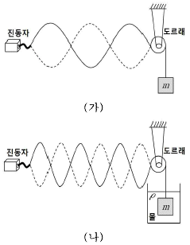
줄에 연결되어 있는 추의 부피는? (단, 줄의 부력과 무게는 무시하고, 물의 밀도는 ρ이며, 중력가속도는 일정하다.)
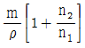
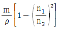
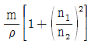
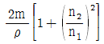
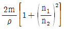
(정답률: 알수없음)

2. 그림과 같이 단열용기에 가득 채워진 10.0 ℃의 물 1.0 kg을 히터를 이용하여 10 분간 가열한 결과, 용기의 부피변화 없이 물이 60.0 ℃의 평형상태에 도달하였다. 히터 양단에 걸리는 전압이 100 V일 때 히터의 저항값은 얼마인가? (단, 온도 증가에 따른 히터의 저항값 변화는 무시하고, 히터의 열은 모두 물로 전달되며, 물의 등적 비열은 4000 J/kg⋅℃ 로 가정한다.)
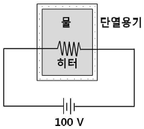
- 20Ω
- 25Ω
- 30Ω
- 35Ω
- 40Ω
(정답률: 알수없음)
3. 그림과 같이 시간 t (sec)에 따라 증가하는 자기장 B(t) = 2t (Tesla)를 반지름 R = 1m인 원형도체의 단면에 수직하게 가할 경우, 원형 도체에 유도전류 I가 흐른다.
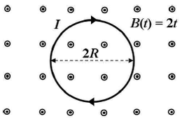
원형 도체의 총 저항값이 8Ω 일 경우, 유도전류 I (Ampere)의 세기는? (단, 자기장은 공간적으로 균일하며, 원형 도체의 두께와 전자기파 발생은 무시한다.)
- π/4
- π/2
- π
- 2π
- 4π
(정답률: 알수없음)
4. 그림과 같이 마찰이 있는 경사면에 놓인 물체 A가 도르래를 통해 실로 연결된 물체 B에 의해 등속운동하고 있다. A와 B의 질량은 각각 4m, m이고 경사면이 수평면과 이루는 각은 30° 이다. 등속운동하는 동안 경사면과 물체 A 사이의 운동 마찰 계수는? (단, 물체 A는 정지하지 않고 있으며, A와 도르래 사이의 실은 경사면과 나란하며, 공기저항, 실의 질량, 도르래 마찰은 무시한다.)
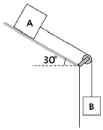
- 1/3
- 1/2
- 1/√3
- 1/√2
- √3/2
(정답률: 알수없음)
5. 그림 (가)는 질량이 m인 인공위성 A가 질량이 MA인 행성을 중심으로 반지름 r의 등속 원운동을 하는 것을 나타낸 것이고, 그림 (나)는 질량이 m인 인공위성 B가 질량이 MB인 행성을 중심으로 반지름 2r의 등속 원운동을 하는 것을 나타낸 것이다.
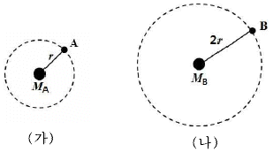
인공위성 A, B의 등속 원운동에 대한 각속도의 크기가 같을 때,
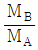
는? (단, MA ≫ m, MB ≫ m이고, 인공위성과 행성의 크기는 무시한다.)- 1/4
- 1/2
- 2
- 4
- 8
(정답률: 알수없음)
6. 그림과 같이 실온에서 밀도가 ρ0인 물에 완전히 잠긴 물체 A는 물체 B와 실로 연결되어 있다. A의 밀도는
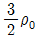
이고, B의 부피는 A의 2 배이다. B가 물에 완전히 잠기기 위한 B의 최소밀도는? (단, A와 B의 밀도는 균일하며, 실의 부피와 질량은 무시한다.)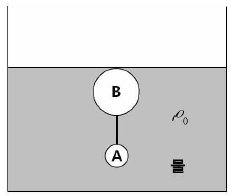
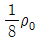
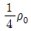
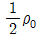
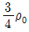
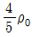
(정답률: 알수없음)
7. 그림과 같이 4개의 저항과 2개의 전지로 회로를 구성하였다. 회로 상의 점 p에 흐르는 전류의 세기는?
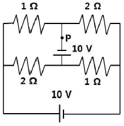
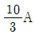
- 5A
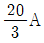
- 10A
- 15A
(정답률: 알수없음)
8. 그림 (가)는 폭 a, 간격 b인 이중슬릿을 나타낸 것이고, 그림 (나)는 단색광이 (가)의 이중슬릿으로 수직입사 할 때 스크린에 생긴 회절무늬의 세기분포를 나타낸 것이다. 다른 조건들은 그대로 유지한 채 슬릿의 간격만 b/2 로 줄일 경우, 스크린에 보이는 회절무늬의 세기분포를 나타낸 것으로 가장 적절한 것은? (단, 스크린은 슬릿으로부터 수 미터 떨어져 있다.)
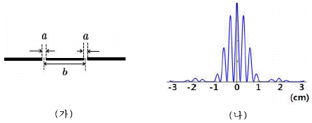
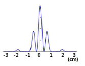
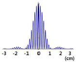
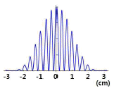
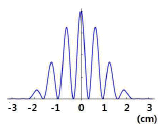
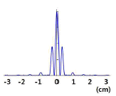
(정답률: 알수없음)
9. 그림 (가)는 금속판 X에 단색광을 비추어 방출된 광전자에 의한 전류를 가변전원의 전압에 따라 측정하는 장치이다. 그림 (나)는 (가)의 장치를 이용하여 색깔이 다른 두 빛 a, b의 광전효과로 발생되는 전류를 가변전원의 전압에 따라 각각 나타낸 것이다. 빛 a 진동수가 금속판 X의 문턱진동수의 2배일 때, 빛 b 진동수는 빛 a 진동수의 몇 배인가? (단, X에 비추어진 빛은 모두 광전자를 발생시킨다.)
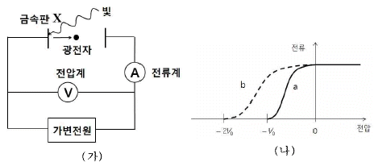
- 1/2
- 1
- 3/2
- 2
- 5/2
(정답률: 알수없음)
10. 그림 (가)는 우물 깊이가 U0이고 폭이 2L인 일차원 유한 우물 퍼텐셜 U(x)를 위치 x에 따라 나타낸 것이다. 그림 (나)는 (가)의 퍼텐셜에 속박된 입자 Y의 파동함수  와
와  를 각각 나타낸 것이다.
를 각각 나타낸 것이다.
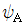
,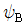
는 에너지가 각각 EA, EB인 Y의 고유상태함수이다.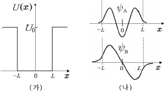
이에 관한 설명으로 옳은 것만을 보기에서 있는 대로 고른 것은?
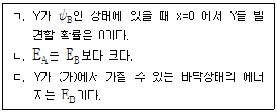
- ㄱ
- ㄷ
- ㄱ, ㄴ
- ㄴ, ㄷ
- ㄱ, ㄴ, ㄷ
(정답률: 알수없음)
11. 다음은 AB3(g)가 분해되는 반응의 화학 반응식이다.
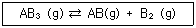
2.0L 밀폐 용기에 AB3(g) 0.10 mol을 넣어 분해 반응시켰더니, AB3(g)가 20 % 분해되어 평형에 도달하였다. 이 평형 상태에 관한 설명으로 옳지 않은 것은? (단, A와 B는 임의의 원소 기호이고, 기체는 이상 기체로 거동하며, 온도는 T 로 일정하고 RT = 80 Lㆍatm/mol이다.)
- B2(g)의 몰분율은 1/6이다.
- AB(g)의 부분 압력은 0.8 atm이다.
- [AB3]는 0.04 M이다.
- 평형 상수 KP는 0.2이다.
- 평형 상수 KC는 1/200 이다.
(정답률: 알수없음)
12. 다음은 298 K에서 반응 2A(g) → B(g)에 관한 자료이다.
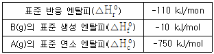
298 K에서 이에 관한 설명으로 옳은 것만을 보기에서 있는 대로 고른 것은? (단, qP와 qV는 각각 일정 압력과 일정 부피에서 진행되는 반응의 열이고, 기체는 이상 기체로 거동한다.)
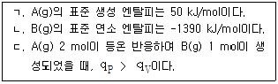
- ㄱ
- ㄷ
- ㄱ, ㄴ
- ㄴ, ㄷ
- ㄱ, ㄴ, ㄷ
(정답률: 알수없음)
13. 그림은 반응
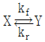
에 대한 퍼텐셜 에너지를 나타낸 것이다. 정반응과 역반응은 각각 X와 Y의 1차 반응이며, kf와 kr은 각각 정반응과 역반응의 속도 상수이다.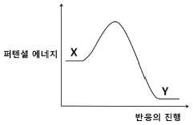
이 반응에 관한 설명으로 옳은 것만을 보기에서 있는 대로 고른 것은? (단, kf와 kr은 아레니우스 식을 만족하며 정반응과 역반응의 아레니우스 상수 A는 서로 같다.)
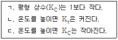
- ㄱ
- ㄴ
- ㄷ
- ㄱ, ㄴ
- ㄴ, ㄷ
(정답률: 알수없음)
14. 분자식이 C6H14인 탄화수소의 구조 이성질체 개수는?
- 3
- 4
- 5
- 6
- 7
(정답률: 알수없음)
15. 원자의 유효 핵전하에 관한 설명으로 옳은 것만을 보기에서 있는 대로 고른 것은?
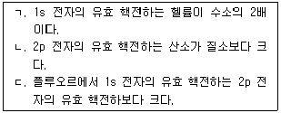
- ㄱ
- ㄴ
- ㄱ, ㄷ
- ㄴ, ㄷ
- ㄱ, ㄴ, ㄷ
(정답률: 알수없음)
16. 다음 화학종에 관한 설명으로 옳은 것은?
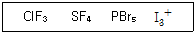
- ClF3는 삼각 평면 구조이다.
- SF4는 정사면체 구조이다.
- PBr5은 사각뿔 구조이다.
- I3+은 굽은 구조이다.
- 중심 원자는 모두 같은 혼성 오비탈을 사용한다.
(정답률: 알수없음)
17. 다음은 Ni2＋이 암모니아(NH3), 에틸렌디아민(en)과 각각 6배위 착화합물을 생성하는 반응의 화학 반응식과 착화합물의 구조를 나타낸 것이다. Kf와 △So는 각각 25 ℃에서의 생성 상수와 표준 반응 엔트로피이다.
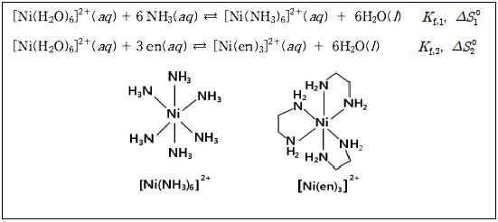
이에 관한 설명으로 옳은 것만을 보기에서 있는 대로 고른 것은?
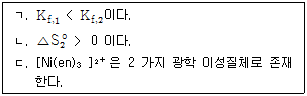
- ㄱ
- ㄴ
- ㄱ, ㄷ
- ㄴ, ㄷ
- ㄱ, ㄴ, ㄷ
(정답률: 알수없음)
18. 다음 혼합 수용액 중 완충 용량이 가장 큰 것은?
- 0.2 M CH3COOH(aq) 1L + 0.2 M CH3COONa(aq) 1L
- 0.1 M CH3COOH(aq) 5L + 0.1 M CH3COONa(aq) 5L
- 0.2 M HCl(aq) 1L + 0.2 M CH3COONa(aq) 1L
- 0.1 M HCl(aq) 5L + 0.1 M CH3COONa(aq) 5L
- 0.2 M HCl(aq) 1L + 0.2 M NaCl(aq) 1L
(정답률: 알수없음)
19. 다음은 2 가지 금속과 관련된 반응의 25 ℃에서의 표준 환원 전위(Eo)이다.
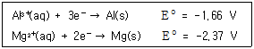
25 ℃에서 반응 2Al3+(aq) + 3Mg(s) ⇄ 2Al(s) + 3Mg2+(aq)의 표준 자유 에너지 변화(△Go)는? (단, 패러데이 상수 F = a J/Vㆍmol 이다.)
- -0.71 a J/mol
- -1.42 a J/mol
- -2.13 a J/mol
- -3.79 a J/mol
- -4.26 a J/mol
(정답률: 알수없음)
20. 다음은 어떤 화합물의 구조와 1H-NMR 스펙트럼을 나타낸 것이다.
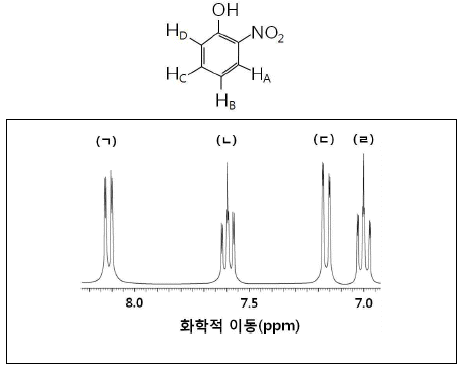
스펙트럼에서 HA ∼ HD에 해당하는 봉우리를 골라 HA, HB, HC, HD 순서로 옳게 나열한 것은?
- ㄱ – ㄴ - ㄹ - ㄷ
- ㄱ - ㄹ - ㄴ - ㄷ
- ㄴ – ㄷ - ㄹ - ㄱ
- ㄷ – ㄹ - ㄴ – ㄱ
- ㄹ - ㄷ - ㄴ - ㄱ
(정답률: 알수없음)
21. 그림은 형질이 서로 다른 부모의 교배를 통하여 얻은 자손들의 형질과 개체수를 표시한 것이다. 재조합 비율은 얼마인가? (단, A와 B는 각각 a와 b에 대하여 우성이다.)
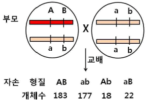
- 0.1 %
- 1 %
- 5 %
- 10 %
- 20 %
(정답률: 알수없음)
22. 그림은 신장의 네프론과 집합관을 나타낸 것이다. 이에 관한 설명으로 옳은 것은?
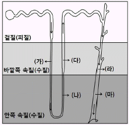
- (가)에서 아쿠아포린을 통해 H2O가 흡수된다.
- 오줌 여과액의 농도는 (나)보다 (다)에서 더 높다.
- (라)에서 NaCl이 확산에 의하여 재흡수된다.
- 뇌하수체 전엽에서 분비되는 항이뇨호르몬(ADH)에 의해 (마)에서 H2O의 재흡수가 촉진된다.
- (가) ~ (마) 중에서 NaCl의 재흡수가 일어나지 않는 곳은 (가)와 (나)이고, 재흡수가 일어나는 곳은 (다) ~ (마)이다.
(정답률: 알수없음)
23. 세포분열에 관한 설명으로 옳지 않은 것은?
- 감수분열은 생식세포에서 일어난다.
- 상처는 체세포 분열을 통해서 재생이 가능하다.
- 유성생식의 유전적 다양성은 감수분열 I 전기에서 발생할 수 있다.
- 배아줄기세포는 수정란이 세포분열을 거친 낭배상태에서 추출할 수 있다.
- 2n=8인 생물의 체세포분열 중기 단계의 세포와 2n=16인 생물의 감수분열 II 중기 단계의 세포에서 관찰되는 염색체의 수는 동일하다.
(정답률: 알수없음)
24. 그림은 자연선택의 3가지 유형을 나타낸 것이다. 화살표는 선택압을 나타낸다.
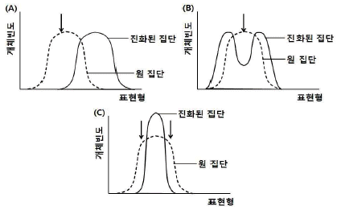
이에 관한 설명으로 옳은 것만을 보기에서 있는 대로 고른 것은?
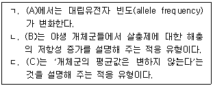
- ㄱ
- ㄴ
- ㄱ, ㄷ
- ㄴ, ㄷ
- ㄱ, ㄴ, ㄷ
(정답률: 알수없음)
25. 그림은 인체 소화기관의 구조를 나타낸 것이다.
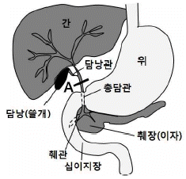
A 지점을 묶었을 때 직접적으로 영향을 받는 것은?
- 지방의 소화 효율이 떨어진다.
- 녹말의 소화 효율이 떨어진다.
- 핵산의 소화 효율이 떨어진다.
- 수용성 비타민의 흡수가 감소한다.
- 단백질의 소화 효율이 떨어진다.
(정답률: 알수없음)
26. 다음 설명 중 옳지 않은 것은?
- 지구 생태계 내에서 물질은 순환한다.
- 감자와 고구마는 상사기관(analogous structure)이다.
- 지리적 격리에 의해 이소적 종분화(allopatric speciation)가 일어난다.
- 고래에 붙어사는 따개비는 편리공생의 예이다.
- 한 집단에서 무작위 교배가 일어나면 대립유전자 빈도가 변한다.
(정답률: 알수없음)
27. 그림은 대립유전자 A와 B의 빈도가 동일한 집단의 유전자풀(gene pool)이 우연한 환경의 변화에 의해 집단의 크기가 감소한 이후, 살아남은 집단의 유전자풀을 나타낸 것이다.
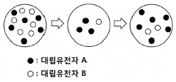
이와 같은 진화요인에 의해 나타난 현상으로 옳은 것은?
- 다른 지역 물개들의 유전적 변이와 비교하여, 북태평양 물개들의 유전적 변이가 적다.
- 갈라파고스 군도에서 각각의 섬에 사는 핀치새의 먹이와 부리 모양은 조금씩 다르다.
- 말라리아가 번성하는 지역에서는 낫 모양 적혈구 유전자의 빈도가 높게 나타난다.
- 다양한 항생제에 내성을 가진 슈퍼박테리아 집단이 출현하였다.
- 흰 민들레가 노란 민들레 군락지에서 출현하였다.
(정답률: 알수없음)
28. 세포 내에서 합성되어 분비되는 항체의 이동경로를 순서대로 옳게 나열한 것은?
- 핵 → 활면소포체 → 골지체 → 수송낭
- 핵 → 조면소포체 → 리소좀 → 수송낭
- 조면소포체 → 골지체 → 수송낭
- 조면소포체 → 리소좀 → 수송낭
- 활면소포체 → 리보솜 → 리소좀 → 수송낭
(정답률: 알수없음)
29. 광합성에 관한 설명으로 옳은 것만을 보기에서 있는 대로 고른 것은?
- ㄱ, ㄴ
- ㄱ, ㄷ
- ㄴ, ㄷ
- ㄱ, ㄷ, ㅁ
- ㄱ, ㄹ, ㅁ
(정답률: 알수없음)
30. 생장을 위해 물질 X를 필요로 하는 곰팡이에 방사선을 조사하여 물질 X를 합성하는 효소를 만드는 유전자들 중 한 유전자에만 돌연변이가 일어난 돌연변이체 Ⅰ, II, Ⅲ을 얻었다. 물질 X 합성 과정의 중간산물인 A, B, C를 최소배지에 각각 첨가하였을 때, 곰팡이의 생장 결과를 표로 나타내었다.
이에 관한 설명으로 옳은 것만을 보기에서 있는 대로 고른 것은?
- ㄱ
- ㄴ
- ㄷ
- ㄱ, ㄴ
- ㄴ, ㄷ
(정답률: 알수없음)
31. 지구 내부의 열과 온도에 관한 설명으로 옳은 것만을 보기에서 있는 대로 고른 것은?
- ㄱ
- ㄴ
- ㄷ
- ㄱ, ㄴ
- ㄴ, ㄷ
(정답률: 알수없음)
32. 점토광물에 관한 설명으로 옳은 것만을 보기에서 있는 대로 고른 것은?
- ㄱ
- ㄴ
- ㄱ, ㄷ
- ㄴ, ㄷ
- ㄱ, ㄴ, ㄷ
(정답률: 알수없음)
33. 다음 중 정장석의 풍화를 나타내는 화학 반응식은?
- CaCO3 + H2O + CO2 → Ca2+ + 2HCO3-
- Fe2O3 + nH2O → Fe2O3ㆍnH2O
- Al2Si2O5(OH)4 + H2O → 2Al(OH)3 + 2SiO2
- (Mg, Fe)2SiO4 + 4H2O → Fe2O3 + 2Mg + H4SiO4
- 2KAlSi3O8 + 2H2O + CO2 → Al2Si2O5(OH)4 + K2CO3 + 4SiO2
(정답률: 알수없음)
34. 다음 중 SiO2 (%) 함량이 가장 적은 것과 가장 많은 심성암으로 짝지어진 것은?
- 감람암 - 화강암
- 섬록암 - 반려암
- 화강암 - 반려암
- 반려암 – 섬록암
- 섬록암 - 감람암
(정답률: 알수없음)
35. 바람에 영향을 미치는 힘에 관한 설명으로 옳은 것은?
- 등압선 간격이 좁을수록 기압경도력은 작아진다.
- 기압경도력은 저기압에서 고기압 쪽으로 작용한다.
- 북반구에서 전향력은 진행해가는 방향의 왼쪽으로 바람을 전향하게 한다.
- 전향력은 풍속이 증가할수록 커진다.
- 전향력은 풍속이 동일하면 고위도 지역으로 갈수록 감소한다.
(정답률: 알수없음)
36. 다음 그림은 연기가 상하로 활발하게 퍼져나가는 모습을 나타낸 것이다.
연기가 퍼져나가는 모양으로 볼 때, 이 지역의 대기 상태를 잘 나타낸 것은? (단, 실선은 기온선, 점선은 건조단열선이다.)
(정답률: 알수없음)
37. 대기권에 관한 설명으로 옳지 않은 것은?
- 대류권에서 기온은 1 km 상승할 때 마다 약 6.5℃감소한다.
- 대류권계면에서부터 고도 약 80 km 까지를 성층권이라 한다.
- 중간권에서는 높이가 올라갈수록 기온이 감소한다.
- 대류권의 두께는 계절과 위도에 따라 다르다.
- 열권은 고도가 높아짐에 따라 기온이 상승한다.
(정답률: 알수없음)
38. 두 별의 겉보기 등급의 차이가 5 일 때, 겉보기 밝기는 약 몇 배 차이가 나는가?
- 10 배
- 50 배
- 100배
- 500배
- 1000 배
(정답률: 알수없음)
39. 다음은 위도 37°N 인 지역의 사계절 태양 일주운동에 관한 그림이다.
이에 관한 설명으로 옳은 것만을 보기에서 있는 대로 고른 것은?
- ㄱ
- ㄷ
- ㄱ, ㄴ
- ㄴ, ㄷ
- ㄱ, ㄴ, ㄷ
(정답률: 알수없음)
40. 다음 H-R도에 표시된 별들의 종류가 옳게 제시된 것은?
- ㄱ: 초거성, ㄴ: 주계열성, ㄷ: 거성, ㄹ: 백색 왜성
- ㄱ: 초거성, ㄴ: 거성, ㄷ: 주계열성, ㄹ: 백색 왜성
- ㄱ: 백색 왜성, ㄴ: 거성, ㄷ: 주계열성, ㄹ: 초거성
- ㄱ: 백색 왜성, ㄴ: 초거성, ㄷ: 거성, ㄹ: 주계열성
- ㄱ: 주계열성, ㄴ: 백색 왜성, ㄷ: 거성, ㄹ: 초거성
(정답률: 알수없음)
m = ρV
n1f1 = n2f2
여기서, V는 도르래와 추가 매달린 물체의 부피이고, f1과 f2는 각각 n1과 n2에 대한 줄의 진동 주기이다. 따라서, V를 구하기 위해서는 m과 f1, f2, n1, n2, ρ이 필요하다. 이 때, m과 f1, n1, n2, ρ은 문제에서 주어졌으므로, V를 구하기 위해서는 f2를 구해야 한다. 이를 위해서는 다음과 같은 식을 사용할 수 있다.
f2 = (n2/n1)f1
따라서, V는 다음과 같이 구할 수 있다.
V = m/ρ = (n2/n1)f1/f2 * m/ρ = (n2/n1)f1/f2 * 1/ρ * (4/3)πr3
여기서, r은 도르래의 반지름이다. 따라서, 정답은 ""이다.